Sim-robot-learning · 归档于 2026-11-05
Peel
How to Peel with a Knife: Aligning Fine-Grained Manipulation with Human Preference
归档到 Robot learning in simulation：真机上的 force-aware imitation + preference finetuning，属于“操作任务的 IL/RL”这一块；论文本身不用仿真，只在 Limits 里提到用 sim 减少食材浪费。
TL;DR
- Problem
- 用刀削皮既要精细力控，又没有客观的成功标准（“削得好不好”是连续、主观的），示教学来的策略能削但削不好。
- Idea
- 两阶段：先用 SpaceMouse 遥操作 + force-aware Diffusion Policy 学会“保持刀和果皮接触”；再用人标的 hybrid reward（局部厚度 + 整条削皮评分）训 reward model，冻住 base，只学一个 reward-weighted 的 residual 修正。
- Result
- 50–200 条示教；苹果从 base 的 60%（score 3.8）到 100%（7.1），土豆 80%（5.9）到 100%（7.3）（Table 2，各 5 次）；零样本迁移到梨 90%、白萝卜 80%、西葫芦 50%。
Problem
能“削下来”不等于“削得好”：现有路线要么削不动，要么没有质量信号
Running example · 后面每个 stage 都跟着它走
削一个苹果：台钳夹住的 苹果（皮薄、滑、曲率大），机械臂握一把 刀，沿主轴削一刀、再绕一圈削满一面 → 想要：薄、长、连续的果皮（qualitative score 9 = “long, thin”），不切进果肉。论文说苹果是最难的：可接受厚度范围最窄，差一点的策略直接失败（§4.4）。
flowchart LR IN["例子输入
台钳上的苹果 + 刀"] --> P1["Model-based planner
点云 → 20 个 waypoint"] P1 --> PX["开环，形状/表面一变就失手
20% · score 1.8 *"]:::gap IN --> K1["Kinesthetic + replay
手拉示教 → 回放"] K1 --> KX["示教时的柔顺参数还原不了
replay 0% *"]:::gap IN --> B1["Imitation only
Diffusion Policy"] B1 --> BX["削得下来，但厚、短
60% · score 3.8"]:::gap IN --> Q1["Offline RL 微调
IQL-weighted"] Q1 --> QX["critic 估 advantage 不稳
0% · score 0.2"]:::gap
* 前两条的数字来自 Table 1，测的是黄瓜上的数据采集质量（10 条轨迹），论文没在苹果上跑它们。“坏在哪”：planner 和 replay 取自 §4.2 / Appendix F 的原话；IQL “不稳”取自 §4.4（“exhibiting better training stability” 是对自己方法的描述，IQL 为何失败论文没细说，属推断）。后两条数字是苹果，Table 2。
根本问题：示教只教会“保持接触”，没有任何信号告诉策略什么是“削得好”，而这个标准连续、主观、写不成公式。 这篇的切入点：把“学会削”和“削得好”拆开——IL 管接触，人类偏好训出的 reward 只用来学一个小残差。
Related work
| 相关工作 | 解决什么 | 怎么解决 | 和本文的区别 |
|---|---|---|---|
| 同一问题 · 别的解法 | |||
| 削皮器削皮 [15,16] planning · [17] teleop · MORPHeus, Vegetable peeling | 机器人削蔬果皮 | 削皮器机械限定刀深和角度；规划、遥操作或脚本 | 深度被工具锁死 → 本文用刀，力、角度、深度全靠策略自己调 |
| 模型驱动的刀切 [20–26] 力/断裂模型、视觉跟踪 | 用刀切软物体 | 解析的切削力模型 + 控制器 | 对建模误差、感知噪声敏感，泛化差 → 本文从示教学策略 |
| 学习式切割 RoboNinja [27] | 多材料物体切割 | model-based 控制 + 可微切割仿真 | 依赖专门仿真器 → 本文直接用真机示教 + 偏好 |
| 相似做法 · 别的问题 | |||
| 从人类偏好学习 RLHF [6,10], PEBBLE, CPL, FDPP | 从偏好学 reward / 策略 | 成对偏好 → reward model → RL 或微调 | 多在仿真、短程、二值成功上 → 本文真机、连续质量、两种分辨率的 hybrid 标注 |
| Force-aware IL / 柔顺控制 FoAR, ForceMimic, DexForce, ACP, RDP | 接触丰富的操作 | 力进观测或动作；ACP/DexForce 从手拉示教估柔顺参数 | 参数手调、规则式，削皮上回放 0% → 本文 SpaceMouse 遥操作 + 固定阻抗控制，力只做观测 |
来源：论文 §2 Related Work，§4.2 / Appendix F 的数据采集对比，§6 的 residual RL [46–48]（列为未来方向，未入表）。未另行检索。
Level 1 · Big picture
先模仿学会“贴着皮走”，再按人的口味加一个小修正
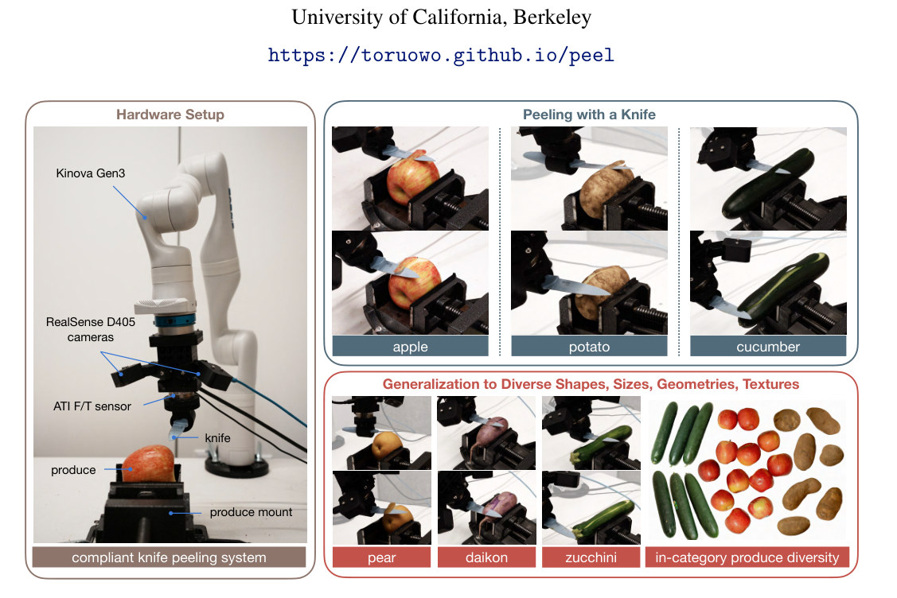
怎么读这张图
- Hardware Setup（左）：从上往下 Kinova Gen3 → 两个 RealSense D405 cameras → ATI F/T sensor → knife；下面 produce mount（台钳）夹着 produce。例子里就是这台机器在削苹果。
- Peeling with a Knife（右上）：apple / potato / cucumber 各两帧，是三种训练蔬果。例子是 apple 这一列。
- Generalization（右下，红框）：pear / daikon / zucchini 是没训练过的品类；in-category produce diversity 是同类不同大小形状的个体。苹果策略迁移到的是 pear。
flowchart TD I["Input
150 条苹果示教"] --> B["Base policy (IL)
60% · score 3.8"] H["人类标注
厚度 2Hz + 0–9 评分"] --> R["Reward model
预测每步偏好"] B --> F["Base + residual
100% · score 7.1"]:::win R --> F
Level 2 · Stages
6 个 stage，分两段
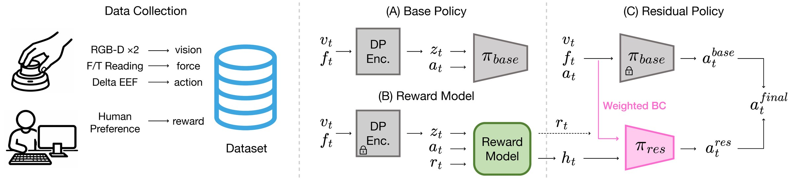
图里的符号
| 符号 | 大白话 | 例子里的值 |
|---|---|---|
| vt | 第 t 步的画面：两个腕部相机的灰度图 + 深度 + 刀/苹果的分割 mask | 苹果和刀的 120×160 图 |
| ft | 力传感器读数（6 维，归一到 [−1,1]） | 刀压在苹果皮上的力 |
| zt | 把画面和力编码后的特征（DP Enc. 输出） | 64 维向量 |
| at | 示教里人实际做的动作：末端位姿的增量（6 维） | 刀往前推一点、往下压一点 |
| πbase / atbase | 模仿学来的策略 / 它给出的动作 | 60% 能削下皮的那个策略 |
| rt | 人标的这一步“削得好不好”分数，0–1 | 厚度 nominal + 整体 9 分 → 1.0 |
| ht | reward model 内部的隐藏特征，喂给残差策略 | — |
| πres / atres | 残差策略 / 它给的小修正 | 刀口再抬高一点 |
| atfinal | 真正执行的动作 = base 动作 + 修正 | — |
| 🔒 | 冻住、不再训练 | — |
怎么读这张图
- Data Collection（左）：人用 SpaceMouse 遥操作，录 RGB-D ×2 → vision、F/T Reading → force、Delta EEF → action；另一个人在电脑前标 Human Preference → reward。全部进 Dataset。苹果：150 条，每条一刀。
- (A) Base Policy：画面 vt 和力 ft 进 DP Enc. 得到特征 zt，πbase 去噪出动作 at。就是普通的 Diffusion Policy。
- (B) Reward Model：DP Enc. 带锁（冻住，直接用 A 的编码器）；绿色 Reward Model 拿特征 zt、动作 at 去拟合人标的分数 rt，顺带吐出隐藏特征 ht。
- (C) Residual Policy：灰色 πbase 带锁，输出 abase；粉色 πres 吃 abase 和 ht，输出修正 ares；两者相加得 afinal。粉色箭头 Weighted BC：虚线 rt 决定每个样本的权重——分高的示教步被模仿得更多。
flowchart TD
subgraph A["Stage A · 学会削"]
direction LR
S1["1 · 硬件 + 控制
10Hz 指令/500Hz 阻抗"] --> S2["2 · 采示教
150 条苹果"]
S2 --> S3["3 · Base policy
60% · 3.8"]
end
subgraph B["Stage B · 削得好"]
direction LR
S4["4 · Hybrid reward
厚度 + 0–9 分"]:::win --> S5["5 · Reward model
Spearman 0.85"]:::win
S5 --> S6["6 · Residual
100% · 7.1"]:::win
end
A --> B
click S1 href "#stage-1"
click S2 href "#stage-2"
click S3 href "#stage-3"
click S4 href "#stage-4"
click S5 href "#stage-5"
click S6 href "#stage-6"
点击 stage 展开 Level 3 细节。绿框是论文新加的部分。Diffusion Policy 怎么工作：互动示意。
Level 3 · Details
每个 stage 的细节
Stage 1 硬件 + 柔顺控制 策略的 10Hz 目标位姿 → 500Hz 关节力矩
- Why：刀和皮的接触瞬间就会变，10Hz 的策略跟不上；把“快速稳住接触”交给底层控制器，策略只管慢一些的几何和力修正。
- How：Kinova Gen3（可力矩控制）+ 法兰和末端之间的 ATI mini45 力传感器（500Hz）+ 定制刀座 + 两个 D405 腕部相机。
- 阻抗控制器（App. B）：关节空间阻抗 + “内部名义轨迹”：实测力矩和指令力矩长期不一致时，名义轨迹自己让开（类似导纳），参数见 Table 6；跑在 Intel NUC 上，基于开源 [37,38]。
- 两个相机：削的方向固定，一个总在刀“前面”（before，看还没削的皮），一个在“后面”（after）。
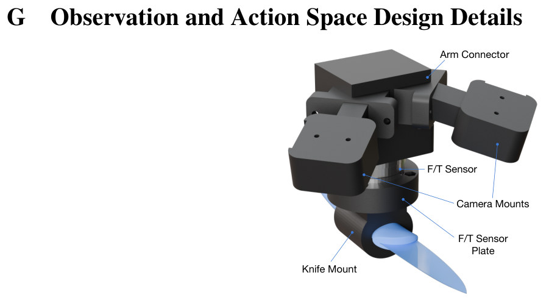
flowchart LR a["策略
10Hz 末端增量"] --> b["IK + 阻抗控制
500Hz 力矩"] b --> c["刀贴在苹果上
接触被底层稳住"]
Running example 在这一步
刀碰到苹果弯曲的表面时，阻抗控制器顺着反力让一点，刀不会硬戳进去；策略每 0.1s 给一个新的末端目标。
Stage 2 采示教数据 人用 SpaceMouse 削 → (画面, 力, 末端增量) 序列
- Why：数据质量决定一切。手拉示教快但回放 0%（示教时人手的柔顺性复原不了）；VR 手抖、追踪噪声大；planner 开环（Table 1）。
- How：3Dconnexion SpaceMouse 控 6 维末端位姿；加权最小二乘 IK（App. D）让远端关节多动、基座少动，轨迹更顺。
- 录什么：10Hz 记录关节角、F/T 读数（从 500Hz 取最新值，减去前 10 个样本均值）、两路 RGB-D；SAM2 在线分割刀和蔬果 mask；动作记成末端坐标系下的 delta EEF（参照 UMI [40]）。
- 任务定义：一条示教 = 沿蔬果主轴（过质心的最长线）的一刀；部署时自动多刀，绕一圈削满一面，整个算一个 episode。
- 数量：黄瓜 50、苹果 150、土豆 200 条（App. E）。
Running example 在这一步
操作员在约 25 个苹果上（App. G 的折算：100 条 ≈ 17 个苹果，每个约 6 刀）削出 150 条单刀示教，每条带两路腕部画面、力曲线和末端增量。
Stage 3 Base policy（force-aware Diffusion Policy） (两路画面, 力) → 6 维末端增量
- Why：先得到一个“能保持刀-皮接触”的策略，后面的微调只在它附近做小改动。
- 输入：每个腕部相机压成 2 通道 [灰度, 深度]，两路共 4 通道，再加 6 维力。用灰度是为了逼策略看几何、不看颜色，利于迁移。
- 网络：图像 ResNet-18 + 力 MLP → 特征 z；z 直接拼进两层 MLP 去噪网络，输出动作。原理见 下一块（互动）。
- 哪些输入重要（Table 10）：去掉力 → 60%；彩色代替灰度 → 0%。
一帧画面怎么进 policy（据代码 fuse_rgbd）
flowchart TD A["2 × D405
RGB + 深度 640×480"] --> B["转灰度；深度只留 15 cm 内
× SAM2 刀∪苹果 mask"] B --> C["缩放 + 随机裁 90%
每路 2×108×144"] C --> D["image1 · image2 · force
before · after · 6 维"] D --> E["encoder
→ 特征 z"] E --> F["去噪 MLP
拼接 [带噪动作, z, k]"]:::win
代码里看到、论文没写清的
| 问题 | 代码里 |
|---|---|
| 关节角是否输入 | 否：state 只有 6 维力（与 Fig. 2 一致；App. E 写有 7 维关节角） |
| 观测历史 / action chunk | 都没有：单帧进，单步出；每步 ≤ 5 mm / 0.005 rad |
| mask 乘在哪 | 灰度和深度都乘（论文只说深度） |
| 部署时的动作 | abase + 0.5·ares，再截到 [−1,1]；pitch 强制为 0（policies.py:214, 221） |
| 残差的输入 | 训练用 [z, abase, h]；部署代码只传 z，模型来自未开源的包 → 不确定 |
来源：ToruOwO/how-to-peel c831b22（2026-11-03）。base Diffusion Policy 本体没开源（policies.py:5），encoder 内部看不到；预处理取自 Stage B 的数据管线，其输出直接送进 base 的 encoder。
Running example 在这一步
只用 150 条示教训出的苹果 base policy：5 次里 3 次削下皮（60%），但平均 score 只有 3.8——Fig. 3 里它那刀是 score 4（“short, thick”，短而厚）。
Stage 3 · 深入 Diffusion Policy 怎么 work（互动） 随机噪声 + 观测 z → 去噪 K 步 → 动作
- 训练：示教动作 + 随机强度的噪声 → 网络看（带噪动作, z, 噪声强度 k）猜噪声 → MSE。
- 推理：从纯噪声出发，每步按 z 减掉一点噪声，K 步后剩下的就是动作。
- 为什么不直接回归：示教有几种做法时，回归取平均；diffusion 每次采样落在其中一种上。
玩具示意：动作压成 2 维，左右 × 上下；用两个示教模式的精确去噪器算 DDIM 轨迹。不是论文数据。
怎么玩
- 拖滑块或点 ▶：蓝点是 48 次独立采样，从纯噪声（第 0 步）一步步被“洗”成动作。
- 前方有凸起：示教里有人左绕、有人右绕。每个样本落到其中一边；红 ✕ 是 MSE 回归的答案，取两者平均 = 正面撞上。
- 刀压太深：换一个 z，同样的噪声被洗成“往上抬”。只有一种做法时，回归也对。
本文的实现（据代码）
- 去噪网络是两层 MLP，条件直接拼接：
denoiser(cat[带噪动作, z, 时间步嵌入])，采样器 DDIM（res_policy.py:51）。 - 单帧观测、单步 6 维动作；K 取多少、网络预测的是噪声还是干净动作，都在未开源的 checkpoint 配置里。
- z 同时喂给 reward model 和 residual：Stage B 复用 base 学好的表示，不再训视觉编码器。
Stage 4 Hybrid reward：两种分辨率的人类标注 每条示教 → 每一步一个 0–1 的 reward rt
- Why：“削得好”有两层：局部厚度能比较客观地判断；连续、平滑、有没有瑕疵只能看整条。一个分数装不下。
- Quantitative（局部）：每条轨迹按 2Hz 切段，每段从腕部画面标一个厚度类：below nominal / nominal / slightly above / above / excessive / N/A（Fig. 5）→ 查表得 Rquant（Table 7）。
- Qualitative（整体）：整条轨迹从正面画面打 0–9 的 Likert 分（Fig. 4）→ 查表得 Rqual = 分数/10（Table 8，苹果土豆相同）。
- 合成（Eq. 4）：Rquant < τ=0.1（厚度已经坏了）时直接取 Rquant；否则 r = α·Rquant + (1−α)·Rqual，苹果 α=0.85，土豆 0.75。
- 平滑：段长 L=15 帧，相邻段重叠 O=3 帧，在边界上线性插值，避免 reward 跳变。
- 谁标：全部由一位专家按固定 rubric 标；两张查表按物理上的好坏排序，不是调出来的超参。
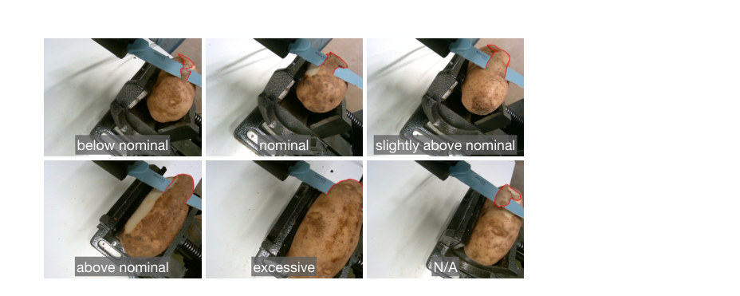
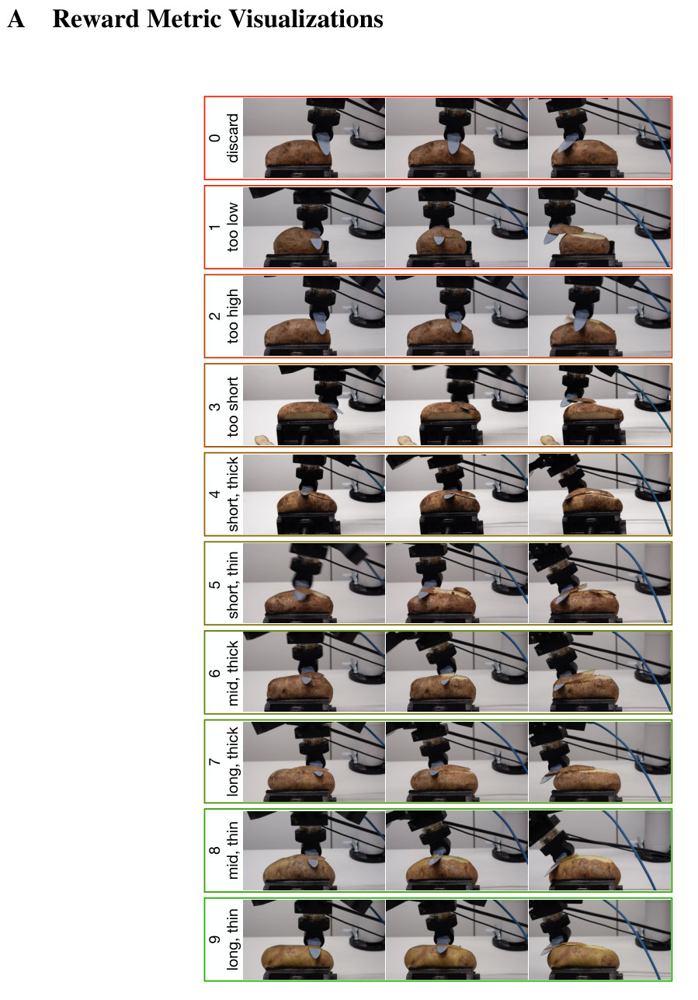
怎么读 Fig. 4 / 5
- Fig. 5 上排 below nominal → nominal → slightly above nominal：皮从太薄到刚好到略厚；下排 above nominal、excessive（切进肉很深）、N/A（没削到）。
- Fig. 4 红框 0–3（discard / too low / too high / too short）都算失败——论文以 score > 3 为成功；黄框 4–6 短或厚；绿框 7–9，9 = long, thin，是目标。
Table 7 / 8 的苹果值（示意计算，按论文查表）
| 某一段的厚度标签 | Rquant | 整条的评分 | Rqual | r（α=0.85） |
|---|---|---|---|---|
| nominal | 1.0 | 9 long, thin | 1.0 | 0.85·1.0 + 0.15·1.0 = 1.0 |
| slightly above nominal | 0.8 | 9 long, thin | 1.0 | 0.68 + 0.15 = 0.83 |
| above nominal | 0.3 | 4 short, thick | 0.4 | 0.255 + 0.06 = 0.315 |
| excessive | 0.0 | 任意 | — | 0.0 < τ → 0 |
苹果和土豆只在 Rquant 表上不同：同样“above nominal”，苹果 0.3、土豆 0.1；“below nominal”苹果 0.3、土豆 0.5——苹果皮薄，同样的绝对厚度罚得更重（App. C）。
Running example 在这一步
150 条苹果示教，每条约被切成若干 2Hz 段各标一个厚度类，再整体打一个 0–9 分；一条“削得又长又薄”的示教里，厚度 nominal 的步得到 r=1.0，偏厚的步只有 0.3 左右。
Stage 5 Reward model (zt, at) → 预测 rt，并输出隐藏特征 ht
- Why：人只标了有限的数据，需要一个函数给每个“状态-动作”打分；同时它的隐藏层编码了“什么是好”，可以直接给残差策略当输入。
- How：三层 MLP rψ，离线训练，输入是冻住的 base 编码器的特征 zt 和示教动作 at，用 MSE 回归 rt。
- 验证：留出 20% 轨迹，Spearman ρ=0.85、Pearson r=0.88、成对排序准确率 >90%；偏差大的样本多半标注者自己也觉得模糊（§4.4）。
flowchart LR z["zt 🔒 编码器
苹果第 t 步"] --> m["3 层 MLP
MSE 拟合 rt"] a["at 示教动作"] --> m m --> o["r̂t + ht
如 r̂≈1.0"]:::win
Running example 在这一步
苹果某一步：刀刚好贴着皮推（标签 r=1.0），reward model 给出接近 1 的预测，同时输出这一步的 ht，供 Stage 6 使用。
Stage 6 Residual policy（reward-weighted BC） (zt, atbase, ht) → 修正 atres；执行 abase + ares
- Why：base 已经会保持接触；从头学或直接改 base 都要用很少的数据重学整个动作分布，会把接触行为学坏（Table 5：Scratch 0%，No Res. 苹果 0%）。
- How：冻住 πbase 和编码器；两层 MLP πres 吃 zt、abase、ht，输出修正量。
- 训练目标（Eq. 1）：让修正量去拟合“示教动作 − base 动作”这个差，每一步按权重 wt 加权；再加一项惩罚修正量太大（系数 λ），防止矫枉过正。
- 权重：wt = exp(β·rt) / 平均 exp(β·rt)——reward 越高的示教步，权重指数级越大。soft 加权比硬阈值筛选（Filter）和 advantage（One-Step）都好（Table 4）。
- 部署：沿主轴一刀接一刀，绕一圈削满一面。
flowchart TD b["πbase 🔒
abase：偏厚的一刀"] --> s["afinal = abase + ares
更薄、更长"]:::win b --> r["πres
+ ht，小修正"]:::win r --> s w["wt = exp(β rt)
好步多学"] -.-> r
Running example 在这一步
苹果：base 那刀偏厚、偏短（score 4）；示教里 r≈1.0 的步权重大，残差学到的是“往那些步的方向挪”。结果 5 次全成功（100%），平均 score 7.1；Fig. 3 里 Ours 削的苹果得 9 分。
Recap：例子覆盖了论文的哪些 idea
| 论文里的 idea | 例子里在哪体现 |
|---|---|
| 柔顺控制分层（10Hz 策略 / 500Hz 阻抗） | Stage 1：刀碰到弯曲的苹果皮时底层让开 |
| SpaceMouse 遥操作采高质量示教 | Stage 2：150 条苹果单刀示教；对比手拉回放 0% |
| Force-aware、灰度 + mask 的 Diffusion Policy | Stage 3：苹果 base 60%，score 3.8 |
| Hybrid reward（2Hz 厚度 + 整条 0–9 分，τ 门控） | Stage 4：nominal + 9 分 → 1.0；above + 4 分 → 0.315 |
| Reward model 从少量标注泛化 | Stage 5：留出集 Spearman 0.85 |
| 冻住 base 的 residual + reward-weighted BC | Stage 6：苹果 100%，score 7.1 |
| Diffusion Policy：从噪声去噪出动作 | Stage 3 · 深入：互动示意，凸起前左绕 / 右绕 |
| 零样本迁移到新品类 | E1：苹果策略削梨 90% |
Results
少量真机数据就够；偏好微调主要提升的是“质量分”，苹果上也提升了成功率
顺序同论文的三问（§4）：E1 base 能不能削、能不能迁移 → E2 数据怎么采 → E3 观测怎么设计 → E4 reward model 准不准 → E5 微调比 baseline 好多少 → E6–E8 reward 和训练方式的消融。比的都是成功率（score > 3）和平均 qualitative score（0–9），E2 另比采集时间。成功率旁的方括号是 95% Wilson 置信区间，论文自己提醒区间重叠时差异要谨慎看。
E1Base 策略能削吗？能迁移到没见过的蔬果吗？§4.1
| 训练品类 | 同品类（新个体、新起始位姿） | 零样本迁移到 | 迁移成功率 |
|---|---|---|---|
| Cucumber | 100% [72,100] | Zucchini 西葫芦 | 50% [24,76] |
| Apple | 100% [72,100] | Pear 梨 | 90% [60,98] |
| Potato | 100% [72,100] | Daikon 白萝卜 | 80% [49,94] |
数字只在 §4.1 正文里，表是据此整理的。
- 说明什么
- 同品类全成功，迁移到“相近”的新品类也大多成功。苹果 → 梨 90%；西葫芦最差 50%，作者推测其皮更硬、果肉柔顺性不同，改变了接触力分布。
- 在故事里
- 回答第一问：Stage A 的策略足够稳，是 Stage B 微调的前提。
- 指标
- qualitative score > 3 算成功；每种 10 次。
- 怎么评测
- 同品类：不同起始位姿、不同大小/形状/硬度/纹理的个体。
- 只挑了三对迁移（作者说是“selected held-out”），不是一般性的跨品类迁移；反向（黄瓜→苹果等）会失败，见 Limits。
- 没说清：这里的 100% 是 base 还是微调后的策略。Table 2 里苹果/土豆的 base 只有 60%/80%，推断苹果、土豆的 100% 指微调后。
E2用什么方式采数据？§4.2 · Table 1 · App. F
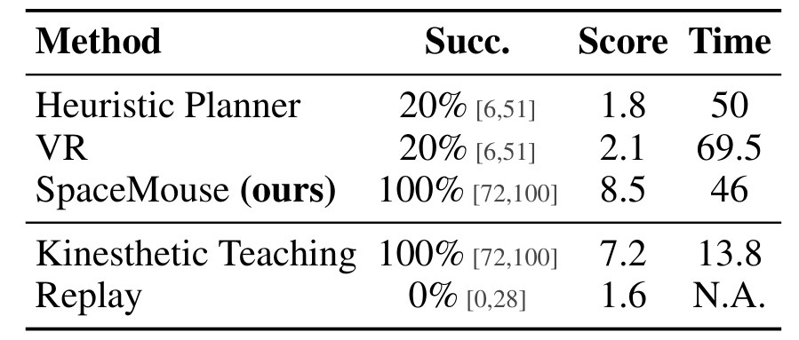
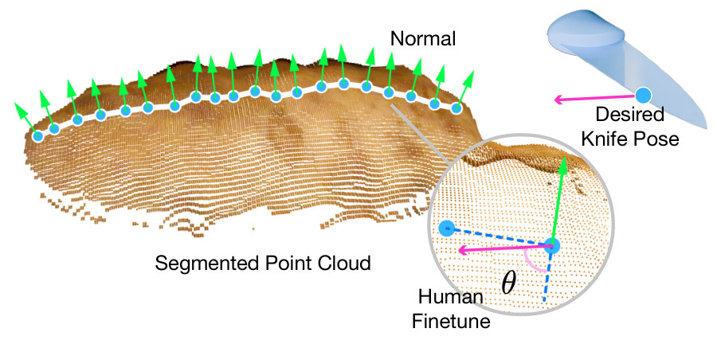
- 说明什么
- SpaceMouse 遥操作质量最高：100%、score 8.5、46 s；planner 和 VR 都只有 20%（1.8 / 2.1 分），VR 还最慢（69.5 s）。手拉示教快（13.8 s）、质量 7.2，但回放 0%：示教时人手提供的柔顺性复原不了。
- 在故事里
- 说明 Stage 2 的选择：在这套硬件和控制器下，SpaceMouse 是唯一能产出“可回放、可学”数据的方式。
- 指标
- 每种方法 10 条黄瓜轨迹，人按 0–9 打分，> 3 算成功；时间只算成功的轨迹。
- 怎么评测
- 黄瓜，各 10 条。
- VR 按 [44] 实现；手拉示教回放时用类似 ACP 的启发式柔顺参数并调过参。
- 作者说这是“在本硬件和控制器下”比较采集流程，不是对遥操作接口的一般排名。
E3相机、模态、数据量哪个重要？§4.3 · App. G · Tables 9–11
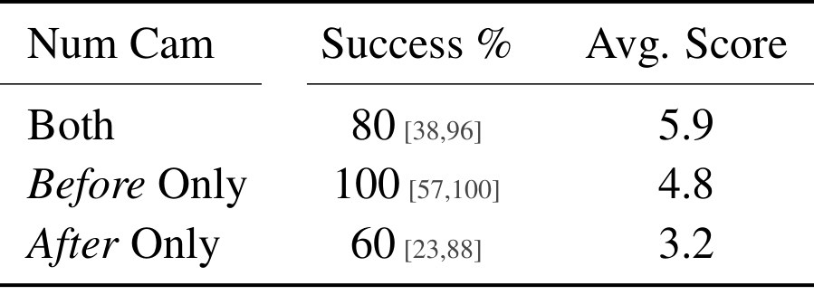
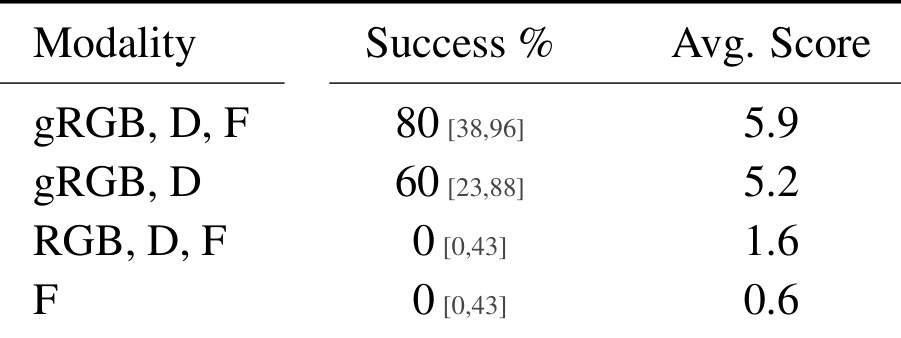
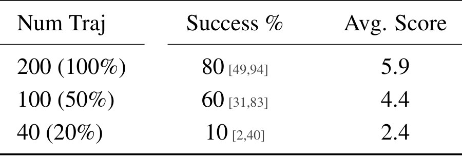
- 说明什么
- 灰度 + 力 + 两相机最好，数据量几乎线性提升。去掉力 80% → 60%；用彩色而非灰度 → 0%；只有力 → 0%。两相机平均分最高（5.9 vs 4.8 / 3.2），但 before-only 成功率反而 100%；before 相机比 after 重要（看到的接触区遮挡更少）。200 / 100 / 40 条 → 80% / 60% / 10%。
- 在故事里
- 支撑 Stage 3 的输入设计；灰度是迁移的关键（逼策略看几何不看纹理）。
- 指标
- 成功率（> 3）+ 平均分。Tables 9/10 各 5 次（取最佳 checkpoint）；Table 11 每格 10 次（App. G 正文）。
- 怎么评测
- 只在土豆上做。
- App. G 还提到：黄瓜 50 条 → 100%、8.5 分；苹果 100 条 → 60%、3.8 分。注意：这和 App. E 的“苹果 150 条”不一致，Table 2 苹果 base 也是 60%/3.8，论文没说明苹果最终用了多少条。
E4Reward model 和人一致吗？§4.4
| 留出 20% 轨迹 | Spearman ρ | Pearson r | 成对排序准确率 |
|---|---|---|---|
| 预测 vs 人工标签 | 0.85 | 0.88 | > 90% |
数字只在 §4.4 正文里，表是据此整理的。
- 说明什么
- Reward model 能可靠地复现标注者的判断。偏差大的样本多是标注者自己也拿不准的。
- 在故事里
- Stage 6 的加权全靠它；它不准，后面都不成立。
- 指标
- 相关系数和成对排序准确率。
- 怎么评测
- 同一位标注者的数据，按轨迹留出 20%。
- 没说：是苹果、土豆还是合起来；也没有跨标注者的检验。
E5偏好微调比其它微调好多少？§4.4 · Table 2 · Fig. 3
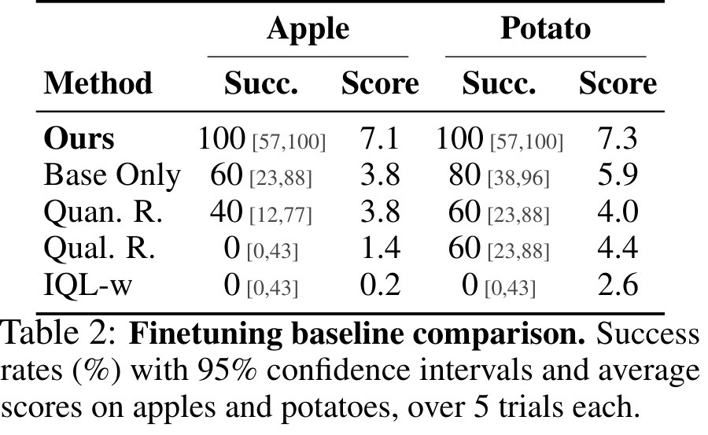
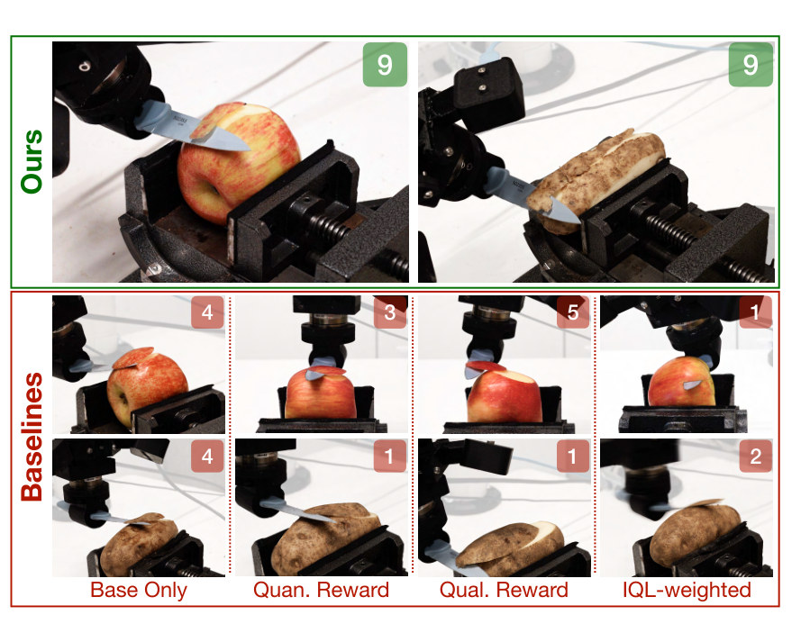
- 说明什么
- 两种 reward 都要，且残差 BC 比 IQL 好。苹果：Ours 100% / 7.1，Base 60% / 3.8，只用 quantitative 40% / 3.8，只用 qualitative 0% / 1.4，IQL-w 0% / 0.2。土豆：Ours 100% / 7.3 vs Base 80% / 5.9。“提升 40%”就是苹果 60 → 100。
- 在故事里
- 回答第三问：偏好微调确实提升了成功执行的质量；两个 reward 分量缺一不可。
- 指标
- 成功率（> 3）+ 平均分，每格 5 次。苹果的结果几乎是二值的：皮窄、滑、曲率大，差的策略直接失败；土豆容错更大。
- 怎么评测
- 所有方法同一数据集。
- IQL-weighted：按 IQL 训 Q、V，用 A = Q − V 做 advantage-weighted 监督微调，用的是同一个 learned reward model——作者选它是为了在同一 reward 下隔离“两阶段残差”这一设计，不是提出新的偏好学习算法。
- 5 次的置信区间很宽（100 [57,100] vs 60 [23,88] 有重叠）。
E6Reward 标多密、多细？§4.4 · Table 3
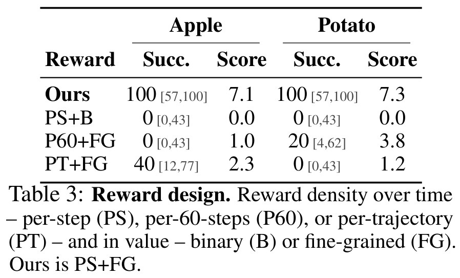
- 说明什么
- 每步 + 细粒度最好，其它都垮。每步但二值（PS+B）两边都 0%；每 60 步（P60+FG）苹果 0%、土豆 20%；每条一个分（PT+FG）苹果 40%、土豆 0%。
- 在故事里
- 说明 Stage 4 为什么要 2Hz 的厚度标注；标注成本由 reward model 摊薄。
- 指标
- 同 E5，每格 5 次。
- 怎么评测
- 只换 reward 形式，其余同 Ours。
E7Learned reward 怎么用？§4.4 · Table 4
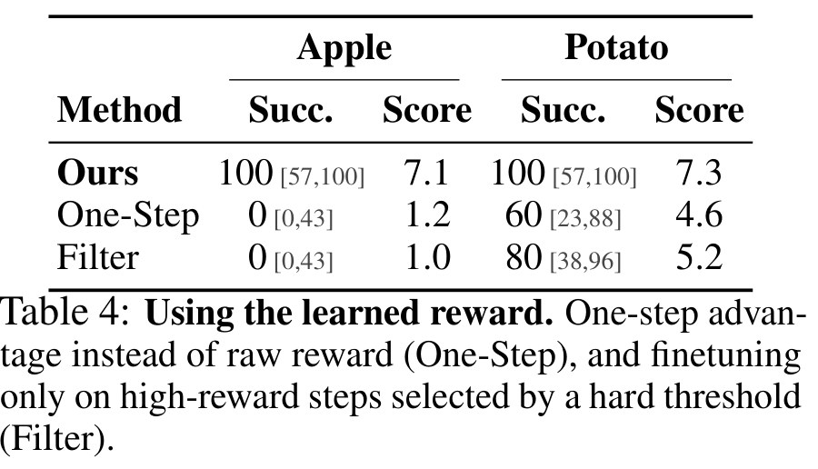
- 说明什么
- 指数 soft 加权最好。苹果上 One-Step 和 Filter 都 0%（1.2 / 1.0 分）；土豆 60% / 80%，分数 4.6 / 5.2，都低于 Ours 的 7.3。
- 在故事里
- 支撑 Stage 6 的 wt = exp(β rt) 设计。
- 指标
- 同 E5，每格 5 次。
- 怎么评测
- 同一个 reward model，只换权重方式。β、λ 和 Filter 保留比例的取值论文没给。
E8为什么要冻住 base、用残差？§4.4 · Table 5
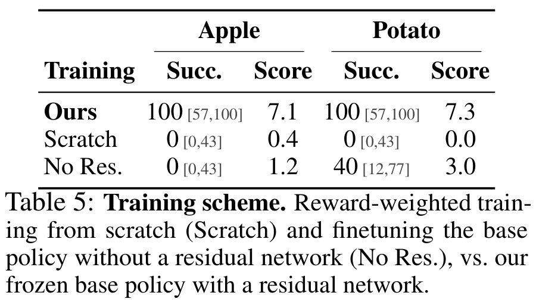
- 说明什么
- 两阶段 + 残差都必要。Scratch 两边 0%；No Res. 苹果 0%、土豆 40%（3.0 分）。作者解释：残差保留了 base 的接触行为，其它做法要用很少的数据重学整个动作分布。
- 在故事里
- “把学会削和削得好拆开”这一核心主张的直接证据。
- 指标
- 同 E5，每格 5 次。
- 怎么评测
- 同数据、同 reward，只换训练方式。
Limits
局限和开放问题
- 依赖人工高质量示教：每种蔬果 50–200 条 SpaceMouse 遥操作；作者建议加在线 RL 微调（[46–48]）或混合自主采集。
- Reward 也靠人：查表和 α 按品类设定；所有标签来自一位专家，换人、换品类、标注者分歧都没研究。
- 跨品类迁移有限：只在挑选过的相近品类上成功；差异大的（苹果 ↔ 土豆）会失败（§4.5）。
- 试验次数少：每个条件 5 或 10 次，小差异不可靠。
- 感知瓶颈：只有腕部相机，估计皮厚和表面质量受限；作者建议加正面相机。
- 食材浪费：作者希望未来用“替代蔬果”或仿真 / sim-to-real 来减少浪费。
For Robot learning in simulation
对我们有什么用
- 冻住 base + reward-weighted residual 是给 harness 里已有策略（RoboTwin / LIBERO 上的 DP 或 VLA）做“按质量微调”的便宜做法：不重训 base，只要一个 reward model 和一个两层 MLP；Table 5 说明直接改 base 会把已有行为学坏。
- 两种分辨率的 hybrid reward（局部可量化指标 + 整条的主观评分，坏到阈值以下直接截断）可以照搬给 Supervisor 的 evidence 打分：成功不是二值时，用 2Hz 局部标签补整条评分的稀疏。
- 开放问题正对 WorldClaw：作者自己说削皮这类变形、切割任务在仿真里很难建模，希望用 sim 减少浪费；能否在 Genesis 里搭一个可切削的蔬果场景，是 real-to-sim 的一个具体目标。